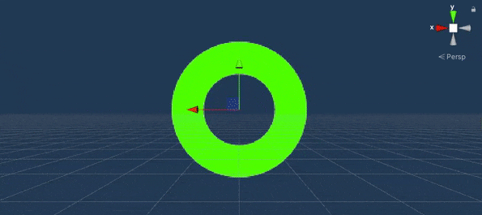
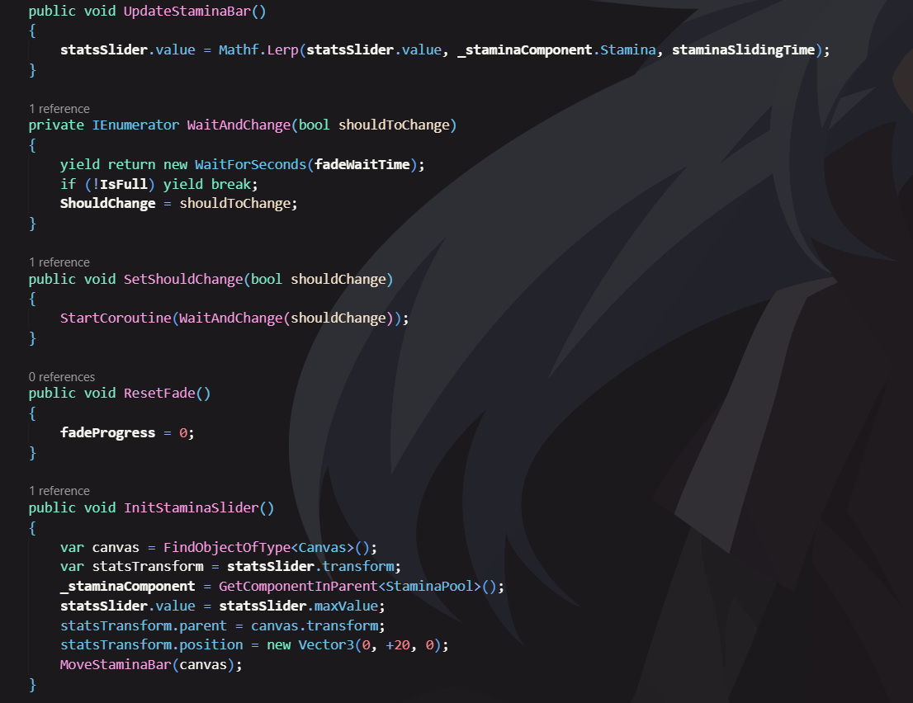
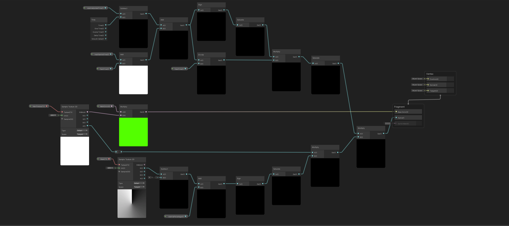
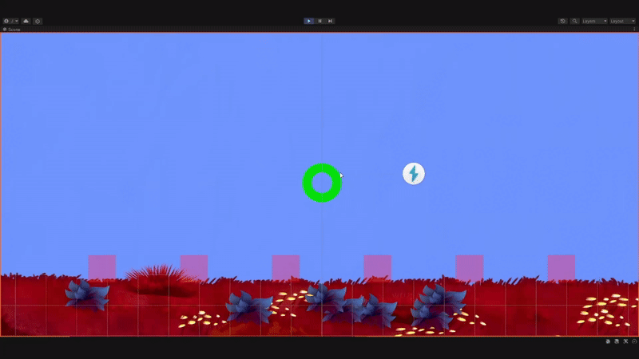
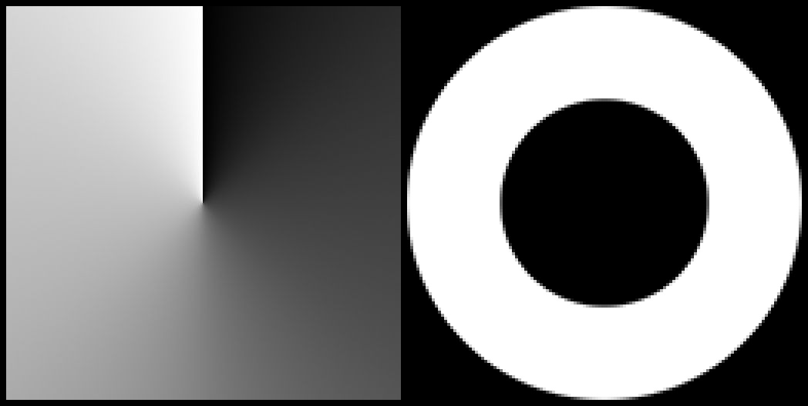

Operation Starfall
Project Status: Completed
Project Type: Professional
Project Duration: 4 Weeks
Software Used: Unity 2022.3
Languages Used: C#
Primary Role(s): Game Developer
Team: 2 Devs, 1 Artist
About Radial Stamina
Radial Stamina was our replacement for the old stamina system in Operation Starfall.
Built using ShaderGraph, this was my first hands-on shader
project, combining visual style with gameplay functionality.
My Features
Intro
Creating this stamina system meant stepping out of my comfort zone and diving into shaders. Instead of a code-only approach, I explored how to build gameplay features through visual scripting. I pair-programmed parts of the stamina logic with another developer, while focusing on ShaderGraph with pointers from both the art and technical directors.
Gif of the Radial

It was inspired by the stamina radial in Zelda: BotW.
Development
At first, grasping how shaders manipulate graphics was a challenge. Trial, error, and lots of debugging slowly revealed how to control colors, masks, and timing. Eventually, the system clicked: it felt less like abstract math and more like designing a visual feature. Seeing the radial animate correctly in-game was a rewarding payoff for the effort.
Functions from the script.

In the snippet above you can see the code of when the stamina bar is depleted and how long it takes to regenerate the stamina back.
How the radial would look in game

As seen above the stamina radial goes empty when running and when it hits 0, it plays an
animations and then regenerates the stamina back over time.
Conclusion
By leveraging shaders, we created a stamina system that was both functional and visually aligned with the game’s style. For me, this feature was a turning point — from seeing shaders as intimidating, to recognizing them as a powerful tool for gameplay and atmosphere.
Full Shader Graph Overview:

This graph uses a radial mask to visualize stamina, with time-based fade logic and dynamic alpha blending based on gameplay inputs.
ShaderGraph Breakdown
The Shader is split into three key sections, each responsible for a part of the stamina ring's visual behavior.
Stamina Fade Logic - Top
This section manages fade-in and fade-out behavior based on stamina events.
Fade-In:
- • Subtract
StaminaUpdateTimefromTimeto get the time since the last update. - • Apply
SignandSaturateto convert it into a clean 0–1 fade-in value. - • This ensures the bar only appears after stamina changes.
Fade-Out:
- • Subtract
Timefrom(StaminaUpdateTime + MaxStaminaTime + FadeTime). - • Divide the result by
FadeTime, then clamp usingSignandSaturate. - • This value decreases over time, fading the bar out as stamina expires.

We multiply the fade-in and fade-out values to produce the final Alpha visibility.
Texture Logic - Middle
This section handles the visual texture of the ring:
- • Multiply the
MainTexture's RGBA output with theMainColorparameter. - • This combined result determines the final Base Color of the stamina ring.
Shape Logic - Bottom
This section shapes the ring using a radial threshold mask:
Left: Radial gradient input mask provided by the artist. Right: The radial texture used for the stamina ring’s shape.

- • Sample the R channel of
MaskTexture, subtract1.0, and addStaminaPercentage. - • Clamp the result with
SignandSaturateto create a clean radial cutoff. - • Multiply this mask by the Alpha of the
MainTextureto preserve soft edges. - • Then multiply again with the fade value from earlier to blend shape and timing.
- • The result is a dynamic ring that cleanly fills and fades based on gameplay stamina.
Combined Result: These three sections work together to render a clean radial stamina bar, blending soft transitions, dynamic visibility, and clear mask-driven shaping.